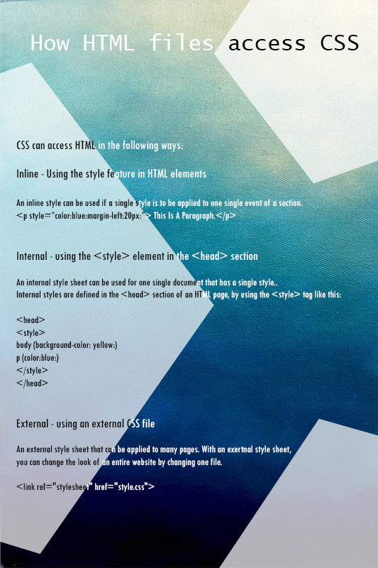
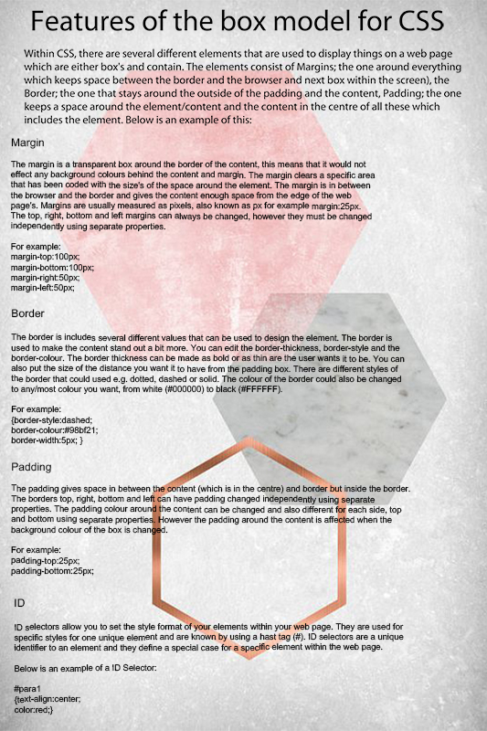

Explaining The Fundamentals Of Scripting Languages

How HTML Files Access CSS

Features Of The Box Model For CSS
Different implementation styles of CSS
In this section I am going to assess different implementation styles for CSS. The different implementation styles in which I am going to talk about include: Internal Style Sheets, External Style sheets and Inline Style sheets.
INLINE CSS
With this technique the CSS code is written within the "<h1> < /h1>" tags of the HTML code. This is an attribute of the HTML. With this written directly within the headings it overwrites the Internal and External techniques. This way is quick to change the colours and formats of text, however every time you want to change a colour format you have to write it out again in the <h1> headings. Inline loses many of its advantages of style sheets because it mixes with the content with the presentation.
Example: This example shows how to change the colour and right margin of a paragraph.
<p style="color: blue; margin- right: 25px;"> My name is John
This would show the paragraph as:
" My name is John"
Advantages of Inline
1. With Inline you don't need to create an external document (as you would if you were using external style sheet). As well as this you don't need to edit a new element in the head of your
document (as you would with an internal style sheet). Inline are therefore very easy to add and can save a lot of time.
2. Testing- Web designers use inline style sheet when they are first working on a new project. This is because it is easier to scroll up in the source instead of changing the source file.
More importantly inline can be used to debug pages if there is an error and it is hard to fix.<br><br>
3. Loads Faster- This is a major benefit with Inline CSS as it has lower HTTP requests. This means that Internal CSS websites load much faster than External CSS websites.
Disadvantages of Inline
1. Must be used on every Element-The Inline style must be used for every element you want it on so it can be much more time consuming if you are creating a large site. For example if you
wanted all your headings to have a font of "Arial" you would have to add an inline < p> < /p> tag in your documents. This will also add download time for the website user when they are
opening the site.
2. Over writing External and Internal- Because Inline is the most specific in the cascade It means you could override your other style sheets such as external and internal even if you didn't
intend to. This can therefore cause problems for the web developer.
INTERNAL CSS
An Internal style sheet means the code is stored in the HTML section of the web page inside the head tag. This is much better than inline because any CSS used within the page will inherit the
formatting e.g. if the font colour is red everything else will change. A bad point about this is if you have <h2> in a document you need repeat the code for every single page. With this style
sheet it means that each HTML file the CSS code needed in order to style the page. This means that if you want to make a change to one page, it would have to be done to them all.
Example:
<head>
hr {color: red;
p {margin-left:20px;}
</style>
</head>
Advantages of Internal
1. Same style on every element- This means that Internal styles don't need to be applied to every element. If you want all your headings or paragraphs to have the family font "Arial" you would
have to add an Inline style <p> tag within your internal style document. This can benefit you if you want to keep all the fonts the same as you just need to do it once.
2. Testing- Internal style sheets are a very useful tool for web developers as they allow you to test your styles in the context of your entire site without breaking any pages apart from the
one you are testing.
Disadvantages of Internal
1. Slow Loading- One of the biggest disadvantages of Internal is that the web pages load very slowly. This is because there are less HTTP requests and are slower than External and Inline.
If you were making a website I would not recommend Internal as you site should load within 15 seconds to stop people from diverting from your site.
2. File Size- When the web developers are working, the page size increases. Although it is helpful for the developers when working offline, it can cause the site to load slowly when they are
online.
EXTERNAL CSS
An external Style sheet is when the code (which is shown below) is in HTML and is put inside the head part of it which looks like this: <head>. The HTML code below links the CSS code from the
“stylesheet” page to the HTML. This way the HTML code and CSS are on separate pages and they are linked together via the code below. So every time you add a new webpage all the format and colour
etc. will be kept the same. This technique is much better than Inline and Internal because the two codes are not mixed together meaning they are easier to find and read.
For example:
hr {color:blue;}
p {margin-right:25px;}
body (background-image:url("image.gif");}
Advantages of External Style Sheets
1. File size is reduced- Because the styling text is within a different document it means that the file sizes of the pages will be reduced quite considerably. As well as this the content to-
code ratio is much greater, than if it was just simple HTML pages. This means the structure and content is much easier to read by the developers.
2. Increasing Traffic to your site- CSS lets you to display your website according to the HTML standards. This can be done without changing any looks or designs on your site itself. Google
gives little value to well organised web pages. This means that more traffic can be directed towards your site.
3. Because the style is separated from the HTML page and is put within a CSS style sheet it means that there is less code within the page but more importantly it makes it more easy to work
with and less confusing as the HTML is separated with the style sheet.
Disadvantages of External Style Sheets
1. If you have a small website it could be more complicated to use external style sheets because they can increase quite fast and if you have deleted web pages it can be confusing as you
wouldn't know which style sheet is needed
<